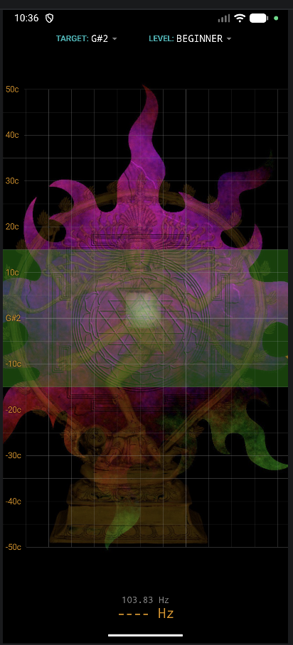
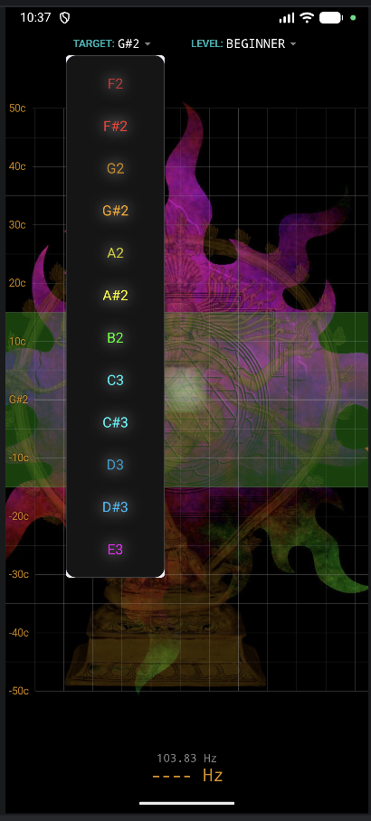

The Art of Vocal Pitch Stability
A minimalist utility designed for vocalists pursuing frequency mastery. Real-time analysis with instant visual feedback for high-stability practice.


Participate in the development of Saraswati. Join our testing community to report bugs, suggest features, or share your practice results.
Testing Group: saraswati-testers@googlegroups.com